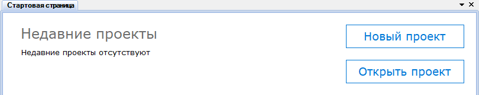
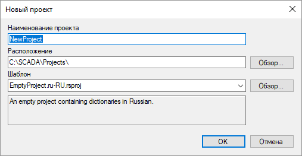
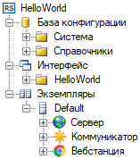

и
и  , расположенных на панели инструментов Администратора.
, расположенных на панели инструментов Администратора. .
. .
.Настройка Rapid SCADA выполняется в рамках проектов. Проект представляет собой набор файлов в различных форматах, которые сохраняются в директории проекта. Для создания и редактирования проектов предназначено приложение Администратор. При запуске Администратора открывается Стартовая страница, с помощью которой можно создать новый или открыть существующий проект (рис. 1).

Рис. 1. Стартовая страница

Рис. 2. Форма создания проекта
При создании проекта (рис. 2) необходимо обратить внимание на используемый шаблон. Шаблон определяет первоначальную конфигурацию, которая добавляется в проект. В качестве шаблона можно использовать другой существующий проект.
Конфигурация Rapid SCADA представлена в проводнике проекта, который расположен в левой части главного окна Администратора. Проект состоит из следующих основных частей (рис. 3):

Рис. 3. Структура проекта
Экземпляр - это компьютер, на котором развернут программный комплекс Rapid SCADA. Один проект может включать в себя несколько экземпляров Rapid SCADA, между которыми происходит обмен данными. Приложение Администратор поддерживает подключение к удалённым серверам для скачивания и передачи конфигурации, поэтому настройка Rapid SCADA может осуществляться с одной рабочей станции.
Начиная работу с Rapid SCADA, рекомендуется придерживаться общей последовательности настройки, приведённой ниже. Получив определённый опыт работы с комплексом, лучше поняв механизмы взаимодействия приложений, можно варьировать последовательность настройки для удобства.
и , расположенных на панели инструментов Администратора...